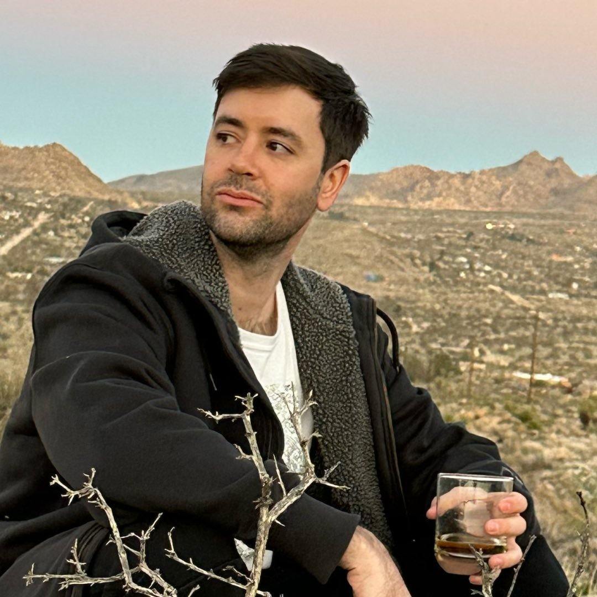
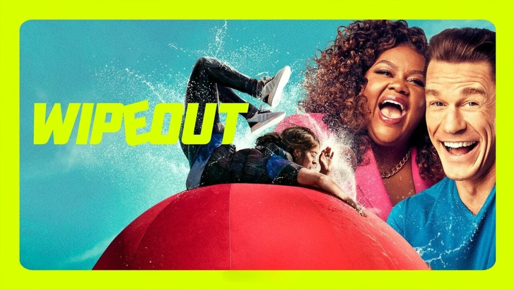
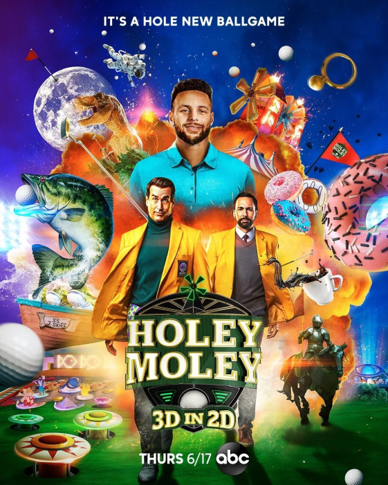
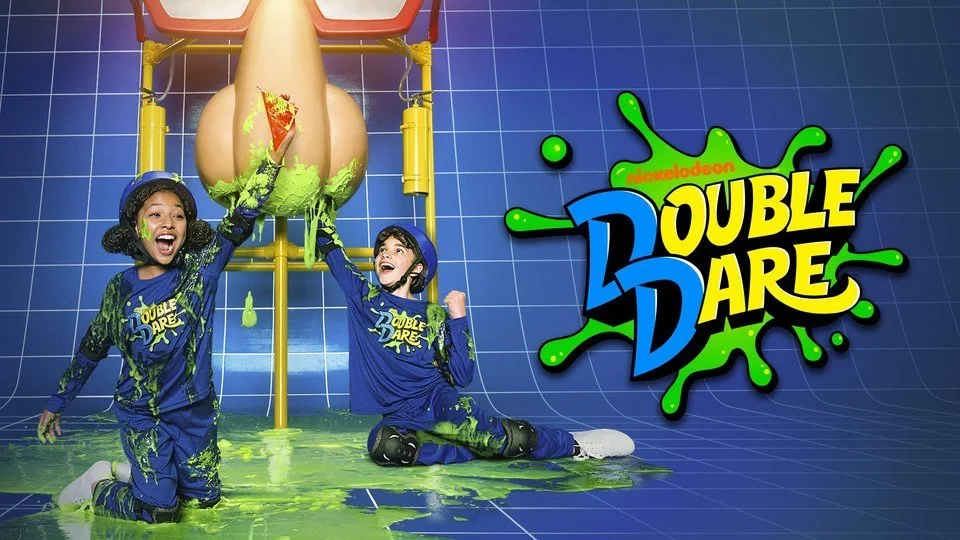
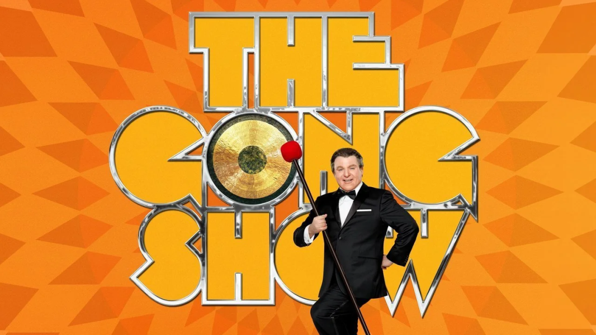
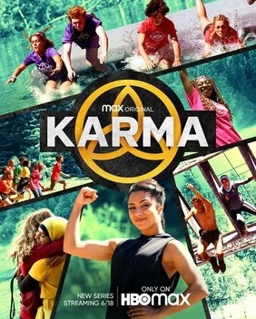

Hey, I'm Evan.
I make things fueled by passion.
I’m an avid gamer, lover of all things competition, and full of energy. When an idea strikes me, I won’t stop until I’ve done it right.
After landing my first job in esports as a producer at Team Liquid, I dove headfirst into the world of YouTube and social media. I researched social strategy, KPIs, thumbnail design, algorithms, and trends. I wanted to be the best possible producer for our social media channels and set goals for myself to really make our content stand out. There were nights I wouldn’t stop working until 1AM, all because I wanted it to look perfect. This is what I mean when I say I make things fueled by passion — it’s something I can’t turn off.
When I joined Team Liquid, I found myself surrounded by professional players I already knew because these were people I would watch and cheer for regularly. It was amazing to be able to connect with them and make fun and engaging content. Working on the docuseries SQUAD leveled me up and made me even more comfortable with a camera in my hands. Now with a keen eye for video composition and a creative vision, I feel empowered to make things that I know people will enjoy. The LCS entrances were an absolute blast to come up with and be part of, and strengthened Team Liquid’s bond with the community. I will always look back on them as one of the highlights of my time working with the TL League team.
I was eventually transferred from the League of Legends content team to another exciting opportunity at Liquid Media, Team Liquid’s in-house ad agency. Working with the team on promotional content for Alienware, social videos, and short form content taught me even more about brand affinity and helping partners reach the gaming audience.
My passion for gaming and competition is something I’ll never let go of, and it continues to be the flame that ignites my creativity in everything I work on in the space. Advertising has only added to that, and I’m constantly striving to find the next idea that will grab viewers’ attention. As I forge a path for myself, I hope to make people smile and laugh along the way.
Where I started
I started in post-production as a story assistant, then worked my way into nonscripted casting.
Working as a story assistant, story editor, and story producer for Authentic Entertainment, I had my first foray into nonscripted television. I found it fun, ridiculous, and enjoyed the ever-changing aspect of working on new shows. Eventually, I learned about the world of casting for nonscripted television series, and decided to try it out because I thought I would be good at it.
As it turns out, connecting with people, learning about their story, and getting them to tell it to the camera was a natural fit. I worked my way up to becoming casting producer on some successful shows, like Wipeout, Name That Tune, and Holey Moley. I conducted hundreds of interviews and really stepped into a leadership role when I helped manage teams of casting associates. Over time, I sharpened my talent producing skills until it became second nature to locate a person’s unique story and get them to tell it to the world.
Casting was fast-paced, hectic, and fun — but I felt I had a different calling. Gaming and esports dominated my attention when I wasn’t working, and I realized it would be a waste of energy if I didn’t try to find a way to work in the gaming industry. Nevertheless, my experience in casting has been essential to my growth, and I believe has allowed me to further connect with people I work with.
Behind the Scenes
Previously
Before esports, I spent years as a Casting Producer in unscripted television, conducting hundreds of interviews and managing casting teams for major network shows.

Wipeout TBS
Holey Moley ABC · Seasons 1-3
Double Dare Nickelodeon
The Gong Show ABC
Karma HBO Max